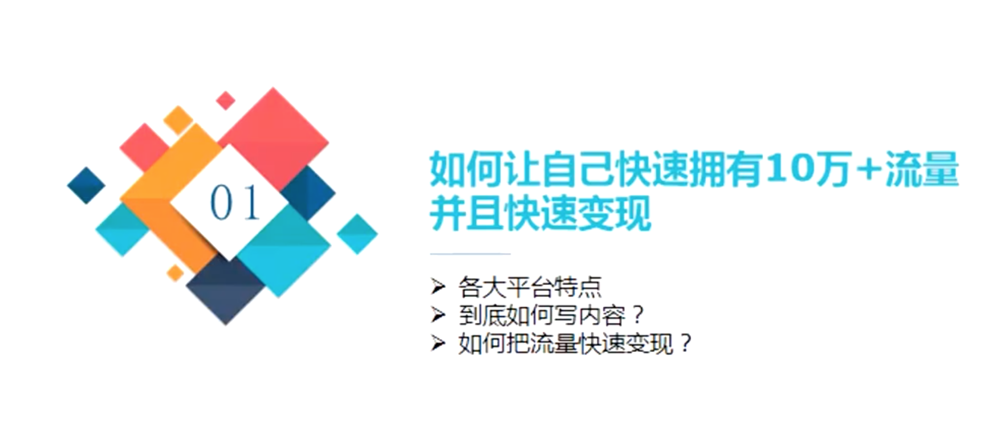
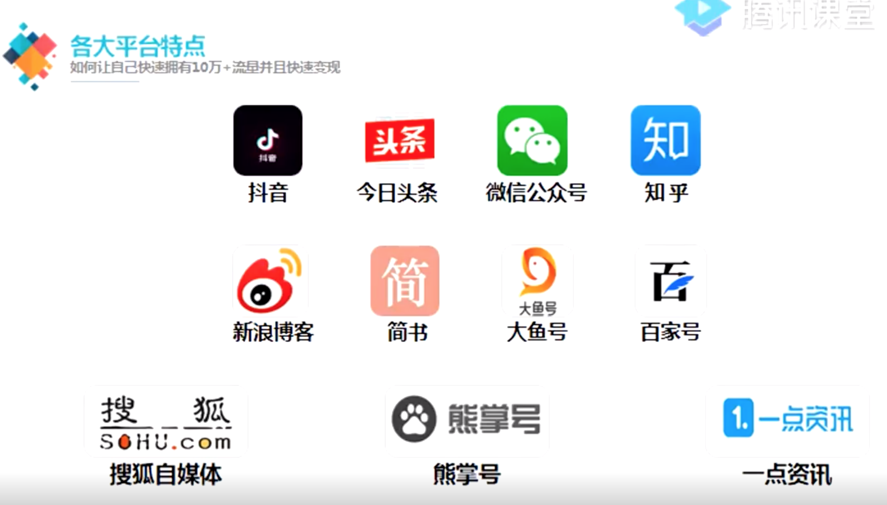
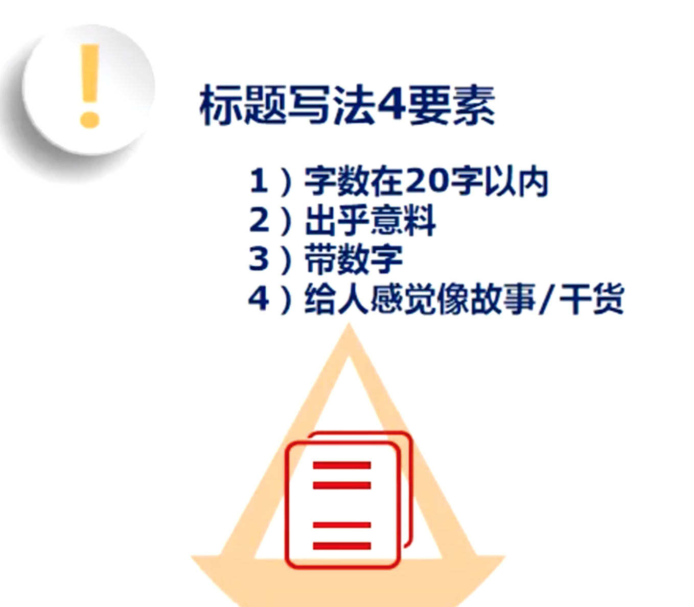

1. 程序员转型之路
视频来自腾讯课堂: 程序员转型之路
1.1. 如何学习?什么叫理财?
1.1.1. 01.如何正确认识学习?
- 知识: 靠记忆 (20%)
- 技能: 靠练习 (30%)
- 态度: 靠发心 (50%)

纸上谈兵一万次,不如战场来一遍

1.1.2. 02.谈转型
graph LR
product((产品)) -.- management((管理))
management -.- freelance((自由职业))
freelance -.- market((市场))
market -.- entrepreneurship((创业))

1.1.3. 03.如何更高效学习与运用
- 保持持续性学习
- 学会跳出自己的"舒适区"
- 思维转变,换个角度看世界

1.1.4. 04.学习思路
graph LR
empty_cup_mentality[空杯心态] --- closing_comments[关闭评论]
closing_comments --- know_and_use[知用合一]
know_and_use --- timely_output[及时输出]

1.2. 如何让自己快速拥有10万+流量,并且快速变现

1.2.1. 各大平台特点
抖音分为商家版和个人版,成立专门团队,越专业越成功!

1.2.2. 到底如何写内容

标题的重要性
- 字数在20字以内
- 出乎意料
- 带数字
- 给人感觉像故事或干货
